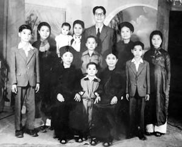
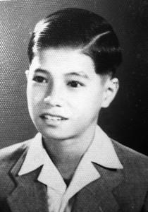

...Thằng oắt con học bơi đâu nghĩ rằng nó đang rèn một “kỹ năng” tối cần thiết mà nếu không có thì lớn lên nó toi hàng chục lần ở chiến trường rồi, chuyện ấy từ từ sẽ kể...
☆
1946.
Cuộc chiến tranh Việt-Pháp bùng nổ và từ Hà Nội nhanh chóng lan rộng ra các tỉnh. Nhà Thủy ở thành phố Nam Ðịnh, một hôm lính Pháp trèo qua tường, bắn lung tung vào nhà, bắn lên gác hai, gác ba, bắn cả vào hai chiếc xe chở khách phủ bạt ở sân...
Bỏ lại ngôi biệt thự rộng rãi, sân vườn, ông bố đưa cả nhà tản cư về quê, làng An Phú, Hải Hậu. Lam lũ thiếu thốn. Tuy chỉ vẻn vẹn có hai ba năm, nhưng cuộc sống ở một làng quê đồng bằng Bắc bộ đã gieo vào tâm hồn Thủy, đứa bé sáu bảy tuổi những kỷ niệm đẹp không bao giờ phai mờ trong suốt cuộc đời, những câu hát như hơi thở đồng quê, sau này nghe mãi cũng không thấy đẹp thấy hay như đã nghe và đã hát hồi thơ ấu.
Bà Nhuận tuy là người giúp việc nhưng anh chị em Thủy gọi là thím. Chồng con thím chết trong trận đói khủng khiếp năm Ất Dậu (1945). Một chữ bẻ đôi không biết nhưng thím là một kho chuyện cổ tích, nào Tống Trân Cúc Hoa, Phạm Tải Ngọc Hoa, nào Hoàng Trừu... Năm cải cách ruộng đất người ta tính bắt giam bố Thủy và ép thím phải đấu tố ông đã bóc lột người làm. Thím nhất định không nghe và trả lời rằng ông là ân nhân của thím, trong nạn đói năm 1945, ông đã cứu giúp và chôn cất không biết bao người vô thừa nhận. Ông còn bỏ tiền ra nuôi dân đắp đê hàng tổng, một con đê dài, đến bây giờ người già còn kể lại...
Thím là người thật thà tử tế. Anh Song, ông anh họ cùng vợ con ở chung nhà một thời gian, có ít vàng sợ loạn lạc mất mát cho nên đem chôn giấu ở chân cột nhà. Sau đó gia đình anh chuyển về thành và nhắn lại cho thím, chỉ chỗ chôn vàng nhờ thím đào lên và gửi cho, thím đã giúp tận tình tìm cách gửi về thành đến tận tay anh, không suy suyển.
- Thím bao nhiêu tuổi?
- Thím bằng tuổi bố mình, tuổi Dần, 1902, khi người Pháp xây cầu Paul Doumer. Năm thím 62, 63 tuổi, bố mình sắm cho thím một cỗ hậu sự, ông còn chui vào nằm thử! Cả nhà vừa sợ hết hồn, vừa buồn cười. Cỗ hậu sự thím dùng để đựng thóc... Hơn hai chục năm sau (1983) thím mới mất trong sự tiếc thương. Giỗ thím là cái giỗ đầu tiên trong năm của gia đình: ngày 12 tháng giêng âm lịch được ghi vào gia phả.
Thím Nhuận để lại ấn tượng rất sâu sắc trong tâm hồn tuổi thơ của Thủy. Thím trông coi lần lượt tất cả 5 anh em Thủy như con và anh em Thủy thương yêu thím như mẹ. Sau này trong cuốn phim “Có Một Làng Quê” (1993), Thủy đưa câu chuyện về thím vào phần kết của cuốn phim, được bên đặt hàng là hãng NHK của Nhật đánh giá cao.
- Có phải đấy chính là bà thím trong “Nếu Ði Hết Biển” không?
- Ðúng thế, thím Nhuận chính là người mà mình đã hỏi: “Nếu Ði Hết Biển thì đến đâu?”. “Uyên bác” là thế mà thím cũng ngẩn người, không trả lời được.
☆
Ừ, câu chuyện bắt đầu đơn giản thế này thôi, chắc cũng như nhiều đứa trẻ ngây thơ khác hồi đó, cậu bé Thủy nghĩ mặt đất nó phẳng lì như một cái chiếu to đùng, nhìn hút tầm mắt, cho nên mới thắc mắc, cứ đi mãi đi mãi thì tới đâu. Một hôm thầy giáo đem “quả” địa cầu đến lớp, từ đó mới biết thì ra trái đất tròn.
Nhưng ở cái tuổi như thế cũng chưa tưởng tượng được rằng: “Ði mãi đi mãi rồi đến đâu”.
Qua bom đạn chiến tranh, qua sóng gió cuộc đời, học nhiều điều, đi nhiều nơi, biết nhiều chuyện, quen nhiều người đến khi tóc chớm bạc... cái câu chuyện tuổi thơ ấy mới trở nên sâu sắc như một triết lý nhân sinh, “đi mãi đi mãi lại trở về quê hương mình”.
Nhưng cuộc sống cũng cho thấy rằng có không ít những mảnh đời những thân phận vì nhiều lí do mà “ đi mãi đi mãi chẳng trở về được quê hương mình ”.
☆
...Năm 1949 Quân Pháp và lính bảo hoàng càn quét sang Hải Hậu, súng bắn đùng đoàng, tắc bọp, tắc bọp. Dân làng chạy tan tác, đàn bà con gái sợ bị bắt, bị hãm hiếp, bôi mặt lem luốc trốn trong ruộng lúa, mấy chị của Thủy cũng vậy. Người anh lớn của Thủy, anh Trần Văn Vĩnh 14 tuổi bị bắn chết, viên đạn trúng tim, phá tan lồng ngực, xuyên qua cái bị cói sau lưng, cái màn trong đó bị thủng mấy chục lỗ. Anh Ðộng, anh rể cả cõng xác anh Vĩnh vượt qua cánh đồng, qua sông về đặt ở gốc cây đa đầu làng. Ðêm tối mịt mùng, đâu đó vẫn còn nghe tắc bọp tắc bọp, một ngọn đèn dầu leo lét trước gió. Bố của Thủy chạy ra nằm phủ phục ôm lấy xác con.
Ðám tang vội vã, gia đình mượn tạm cỗ hậu của bà Ngũ để chôn cất anh Vĩnh ngay trong đêm đó. Tội nghiệp, anh hiền lành học giỏi, yêu quí các em. Nếu còn sống, anh Vĩnh chắc chắn sẽ là chỗ dựa vững chãi cho Thủy trên bước đường đời sau này, tuy anh chỉ hơn Thủy bốn tuổi.
Sau sự kiện đó, không chút do dự, bố Thủy quyết định đưa cả nhà về thành, tất nhiên khi đó thành phố đã nằm trong tay quân đội Pháp.
Ðó là năm 1949.
Mấy anh chị em bắt đầu đi học trở lại...
Ở Hà Nội, bà chị cả cùng chồng con ở 41 phố Ngô Sĩ Liên, trước cửa chùa Tàu. Ðến vụ hè Thủy lại lên Hà Nội chơi rông và tập bơi ở Ấu Trĩ Viên (Cung Thiếu Nhi ngày nay), học có thầy dạy, có bài bản. Năm 11 tuổi Thủy đã bơi thạo lắm rồi, nào brasse, brasse-coulé, crun...
Ở Hà Nội nhiều đứa như thế, nhưng thằng oắt con này học bơi đâu nghĩ rằng nó đang rèn một “kỹ năng” tối cần thiết mà nếu không có thì lớn lên nó toi hàng chục lần ở chiến trường rồi, chuyện ấy từ từ sẽ kể. Các cụ bảo “ có phúc đẻ con biết lội; có tội đẻ con biết trèo ”. Thế mà phải trốn nhà để đi “lội” đấy.

Thủy 12 tuổi (ngoài cùng bên trái) cùng gia đình. 1952
Mấy anh em Thủy cứ chạy lông nhông từ Ngô Sĩ Liên qua Sinh Từ, Hàng Bông, Hàng Gai, Bờ Hồ, lên tận Ấu Trĩ Viên mà thấy gần không!
...Bây giờ hơn bảy chục tuổi hắn vẫn bơi mỗi ngày ngàn rưỡi hai ngàn mét. Bơi không mệt, cứ như đi bộ trên mặt đất vậy, chán thì lên.
☆
Thời niên thiếu của Thủy cũng có những chuyện liên quan đến làm nghề.
Ngày bé, do “dinh tê” (entrer – vào, ý nói quay trở vào sống ở thành phố đã bị chiếm đóng ) mà từ 1949-1954 Thủy được xem rất nhiều phim. Cậu bé mê phim để rồi bao nhiêu tiền ki cóp được đều nướng vào các rạp chiếu phim. Những Tarzan, Zoro, Charlie Chaplin (Sác-lô), Rashomon, Anh gắng nuôi con, Kẻ cắp xe đạp, Samson et Dalila, Quo va dis, Ivanhoe, Les Trois Mousquetaires, Les Miserables, Cuốn theo chiều gió... Nhiều phim kinh điển khác nữa Thủy đã được xem từ những năm đó. Cậu ta còn sưu tập chân dung các tài tử nổi tiếng thời đó như Robert Taylor, Clark Gable, Victor Mature, La Latourne, Elizabeth Taylor...
Rạp chiếu bóng đầu tiên trong đời cậu bé Thủy bước chân vào là rạp Bắc Ðô ở phố Hàng Giấy bây giờ. Có một chuyện không thể nào quên, bữa đó được đi xem Tarzan , Thủy và lũ trẻ con vào rạp thì đèn đã tắt, phim đã chiếu. Lũ trẻ túm áo theo nhau tìm chỗ ngồi. Tối om, chẳng nhìn thấy gì, sờ soạng thấy hàng ghế, nhưng quái lạ, không hiểu tại sao mặt ghế cứ dựng lên. Bọn trẻ mắt cứ dán vào màn ảnh và len lén ngồi lên mép ghế, cố chịu đau mà xem. Lúc hết phim, mọi người đứng lên, ghế lật rào rào, chúng nó mới vỡ lẽ.

...bao nhiêu tiền ki cóp được đều nướng vào các rạp chiếu phim...
Thủy còn mê và thuộc tân nhạc, nhạc tiền chiến ngay từ khi còn bé. Sau này có giai đoạn những tác phẩm ấy bị cấm gắt gao, có những người chỉ tụ bạ hát cho nhau nghe mà bị đi tù. Ðó là điều ám ảnh day dứt trong Thủy. Anh chàng cũng từng đeo đẳng với nhạc sĩ Ðoàn Chuẩn để học guitare Hawai vào những năm 1958-1959 mà chả nên cơm cháo gì. Vừa mới đây thôi 2010-2011, Thủy đã làm bộ phim liên quan đến những chuyện chìm nổi của cái gọi là dòng nhạc vàng.
Sau phổ thông trung học, Thủy được theo học một lớp về dân tộc học và về bảo tàng gì đó do bộ Văn Hóa tổ chức, địa điểm ở 22 Hai Bà Trưng, xưa là Vụ Bảo tồn Bảo tàng, ông Ðặng Xuân Thiều, em con ông chú ông Trường Chinh là Vụ trưởng. Lớp này chuyên đào tạo cho miền núi….
☆